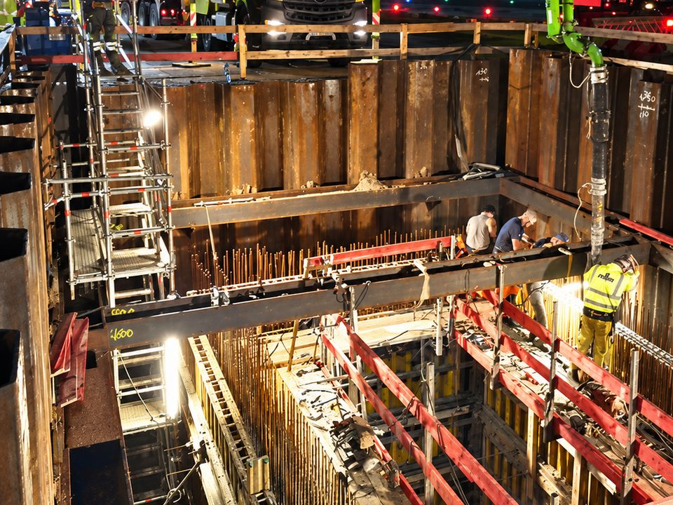

ARGE Neubau Kerosintrassen B46–N20
Projektleitung für Abbruch und Neubau eines Kerosinschachts (ca. 8 × 6 × 9 m) im laufenden Betrieb mit Tunnelvortrieb unter der Rollbahn – als ARGE Schnorpfeil Rhein-Main / Sonntag Baugesellschaft / Reinhard Rohrbau.
- 3.500 m³ Erdaushub
- 1.000 m² Walzasphaltbau
- 500 m² Fahrbahndeckenbeton
Projektleitung für den Abbruch sowie Neubau eines Ingenieurbauwerks in Betrieb (Kerosinschacht L/B/T ca. 8 m × 6 m × 9 m) mit Tunnelvortrieb unter Rollbahn, Anschlussgraben und Sanierung des Fahrbahndeckenbetons als ARGE Schnorpfeil Rhein-Main GmbH & Co. KG / Sonntag Baugesellschaft / Reinhard Rohrbau GmbH.
Technische Federführung und Überwachung der ARGE-Partner bei Spundwandeinbringen, Tunnelvortrieb und Kerosinrohrverlegung in 8 m Tiefe.
Leistungsumfang
- 3.500 m³ Erdaushub
- 1.000 m² Walzasphaltbau
- 500 m² Fahrbahndeckenbeton
- 150 m Tunnel-/Rohrvortrieb
- 150 m³ Ortbeton Schachtbauwerk
- 30 m² Schachtdeckeninstandsetzung (Beton)
- 80 m Spundwand rammen (T = 10–12 m)
✓ Abgeschlossen